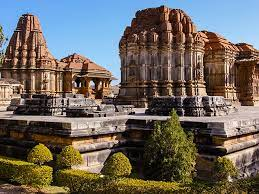

This temple is located around 10 km from Jaipur and is an old one. There are several temples here and a sacred water tank where devotees take a holy dip. In this temple complex, there are temples dedicated to Lord Balaji and Lord Surya (the Sun God). There is also the temple of Ramgopalji. It is also known as the monkey temple and there are tribes of monkeys living in it. The most popular festival celebrated in this temple is that of Makar Sankranti. So, it is worth visiting here during that time of the year. Click here to know more

This is a relatively new temple and has been built by the Birla Group of Industries in 1988. It is constructed on a slightly elevated ground near another famous temple, i.e. the Moti Dungari temple. Actually, this temple is built on the base of Moti Dungari hill.The temple looks spectacular both during the day time and in the evening when it is all lit-up. Like the other Birla Mandirs, this one is also dedicated to Lord Vishnu and Goddess Lakshmi. This temple has three huge domes, a big green garden and there are mythological events carved on the walls of this temple. Click here to know more

This temple is one of the major religious sites and was built in 734 AD and has 108 temples within its premises. It is a famous temple among Hindu pilgrims who visit it every Monday and offer prayers to Lord Shiva. One of the primary temples, it has a four-faced image of Lord Shiva. Other than a Monday, if possible, try visiting this temple during Mahashivratri. The place is crowded but worth a visit. The temple architecture is truly unique. It is a double storied one with a pyramid style roof and carved tower. In the main temple, there is a huge pillared hall and has a heavy pyramidal roof. Click here to know more
